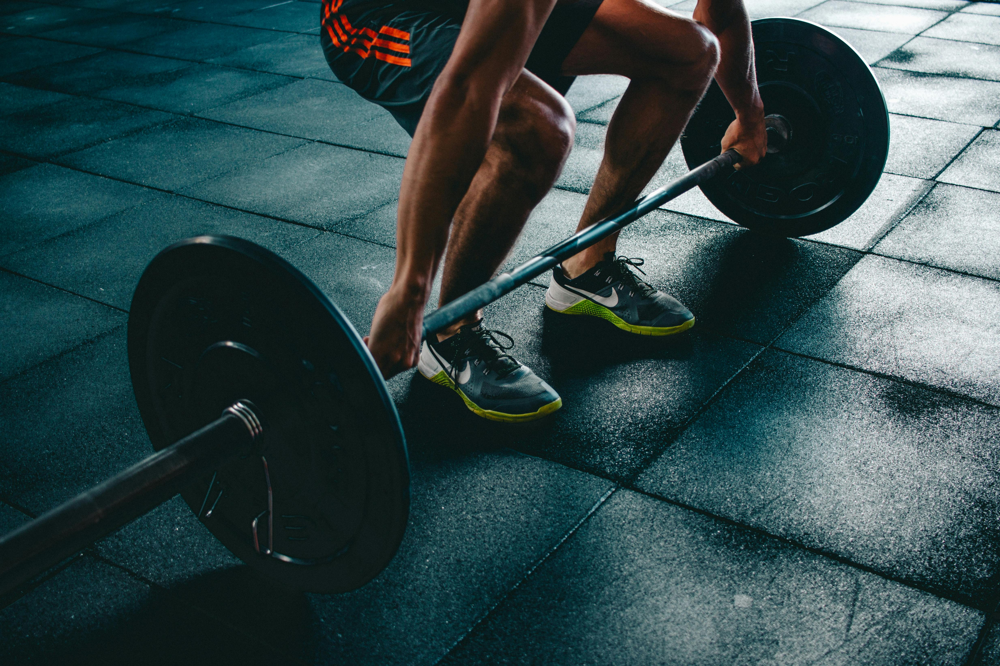

| Category | Data |
|---|---|
| Adults not meeting recommended activity | 31% |
| Adolescents not meeting recommended activity | 80% |
| Global target reduction by 2025 (vs. 2010 baseline) | 10% |
| Global target reduction by 2030 (vs. 2010 baseline) | 15% |
| Estimated cost of inactivity (2020–2030) | US$ 300 billion (total) |
| Annual cost of inactivity | ≈ US$ 27 billion / year |
The Unfortunate Problem.
With the given data, it's evident that the generation's digital dominance comes with a price.
Majority of adolescence are inactive compared to adults due to online lifestyles.
The Terrible Result.
This inactivity renders our generation vulnerable to diseases and the lack of productivity.
For instance, large sums of US's funds are lost due to healthcare and loss of productivity.
The Ongoing Efforts
Currently, WHO is aiming for a 15% reduction in activity by 2030 through the implementation of policies.
WHO provides guidelines, tools, and resources for other countries to increase physical activities.
Programs around the world promote physical activities such as running, basketball, etc.
The main objective is to create a safe environment, promote engagement in physical activities, and digital solutions that promote behavior changes.
Where we come in!
Kinetic Training Org focuses on enhancing your day-to-day lifestyle by providing fitness and disciplinary mindsets that will bolster your confidence.
I will introduce you to the basics of human psychology, physical activities that ignite the fire for fitness, and the overall effects in growing up in order to enrich your understanding and create better opportunities.
Sources